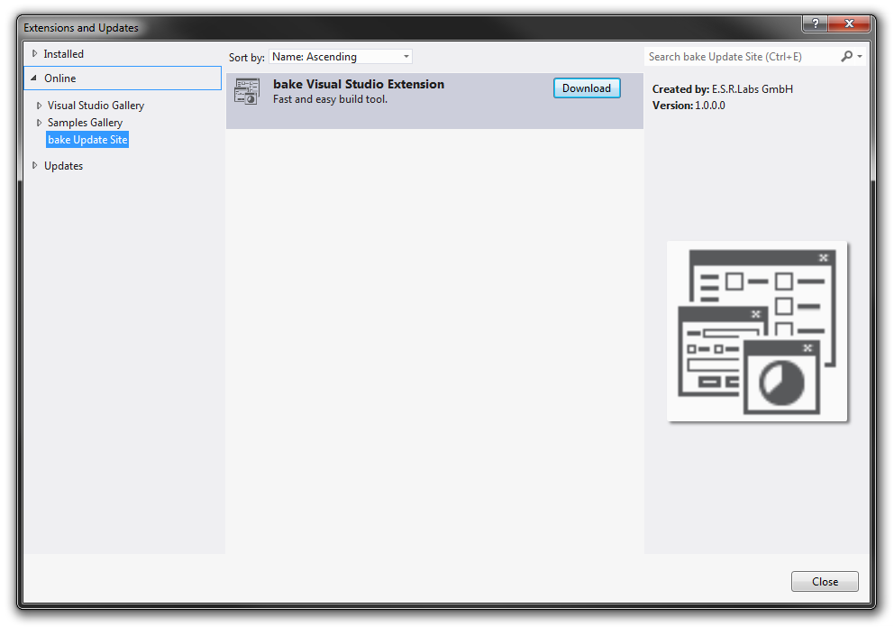

URL: http://www.esrlabs.com/vs-plugins/bake/atom.xml
Configure the update site:
URL: http://www.esrlabs.com/vs-plugins/bake/atom.xml
Now it's available via Tools->Extensions and Updates:

Check if it's installed correctly:

If an update is available, it will look like this: